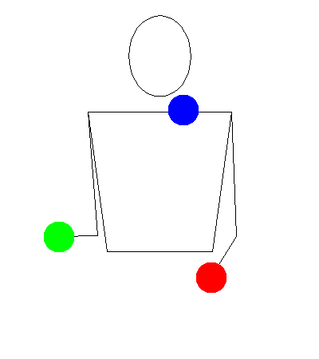

Reverse Cascade

Description
Prerequisites
Tutorial
Tips
- Some prefer mixing in one reverse throw while doing regular cascade. This can be confusing so it is up to you as to if you start doing it or do a transition.
Fun Facts
- Because of the paths made by regular and reverse cascade, the record for most throws in a minute is faster with reverse cascade.